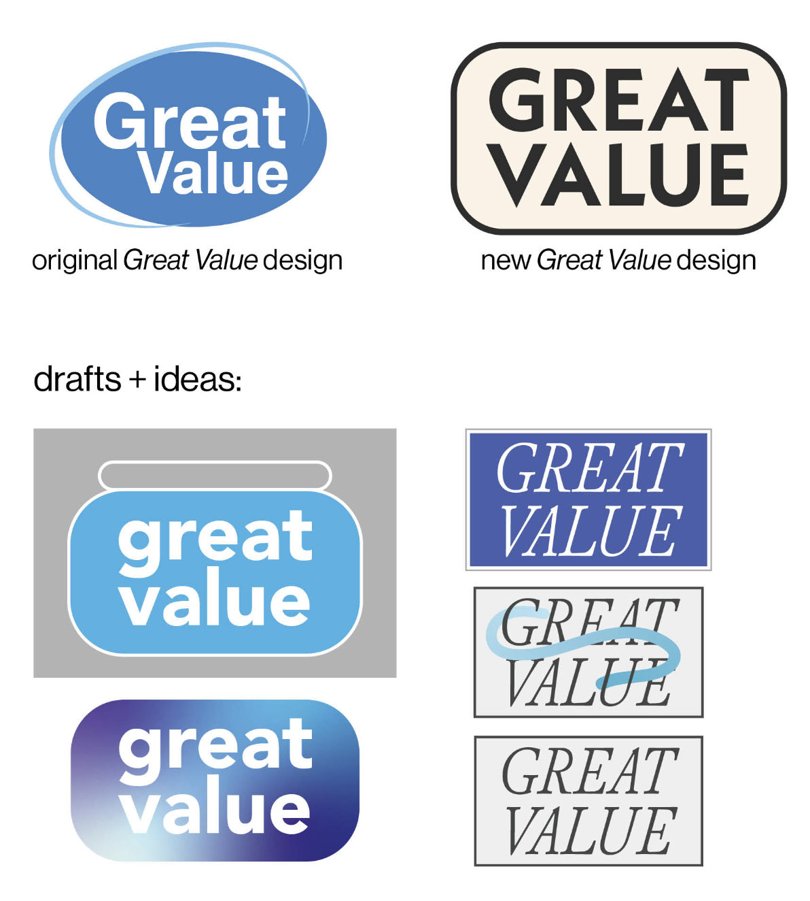
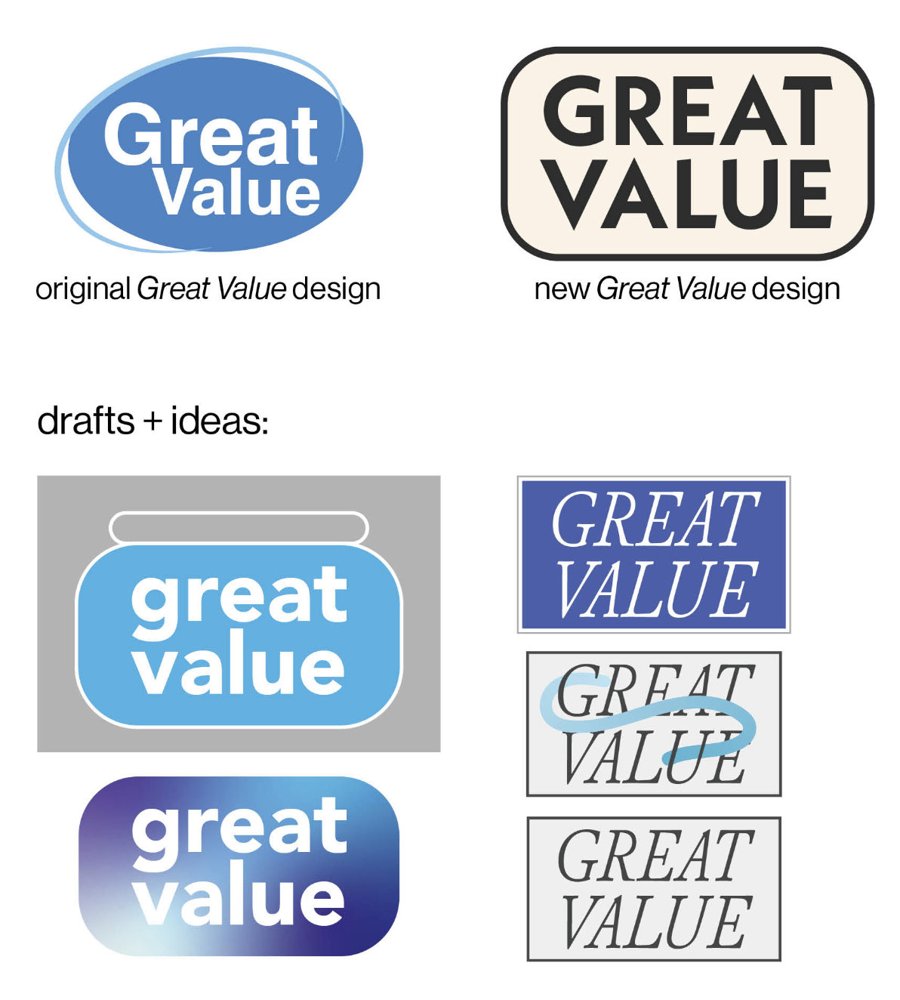

Columbia College Chicago: Great Value Packaging Redesign

The goal of this project was to find something in a grocery store that had bad design and redesign it.
We didn't want to choose anything too big of a brand because we didn't want to change their identity per
se. However, I still ended up choosing Great Value by Walmart.
The first thing I think of, when I think of visually unattractive, is Walmart and every entity that it
has. I actually did some in-depth research on cost friendly brands and why the design is always so bad.
I found a lot of good research on classism in design. This is me, making something that is designed to
be ugly, more appealing. An anti-classist design.
 

During the process of re-creating the logo, I considered how I didn't want to completely change it
because of how big Great Value is. I noticed how the oval shape was very persistent in a lot of their
design, so I reworked it into rounded rectangle. I could have easily gone, a more contemporary route
similar to Target's approach, but I didn't want to do the same exact thing. I tried to be more creative
and take some inspiration from design in the 70s.
The font I chose, Neue Kabel was made in
the late 20s, but reworked in the 1970s for advertising in the US in the 70s.


This project was halted due to a college wide faculty strike, so I never got to get feedback from my instructor. But I was happy with the outcome.